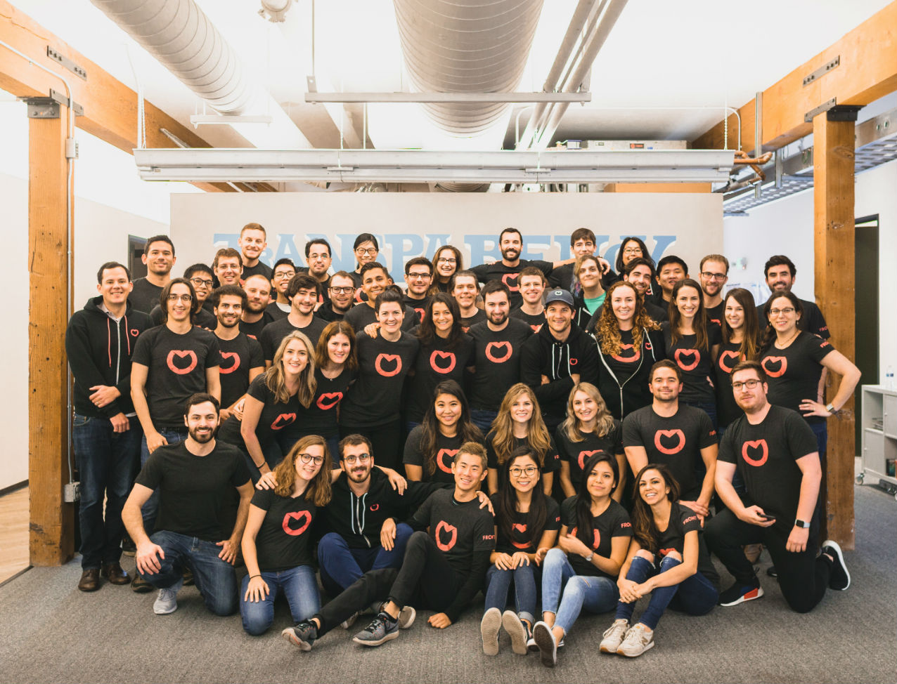
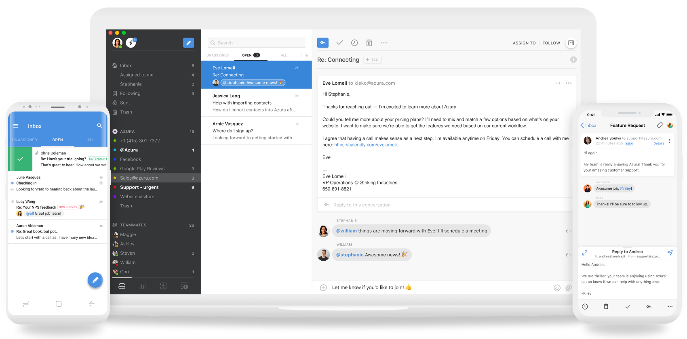
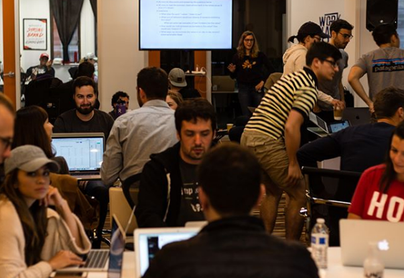
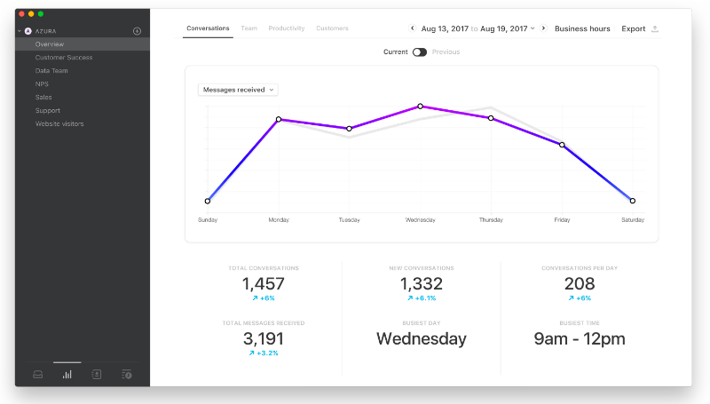

Cori Morris is the customer support manager at Front, one of the fastest-growing and most-talked about SaaS companies of the last five years. Coming from a career in marketing, it wasn’t until she packed her bags for San Francisco and took on the role of Head of Community and Operations for a start-up called Weave that she realised she (actually) really enjoyed helping customers learn. And she’s never looked back.
Fast forward three and a half years – Cori helps manage Front’s hugely successful support operation. Having grown from a party of one to a team of six, they work harmoniously to support the 3500+ businesses that are using the company’s services today.
For those who don’t know: Front is reinventing the inbox. The aim? To allow people to accomplish more, together, by unifying your email, customer communication channels, and apps – all in one platform. The result? A workplace where people are more productive, more collaborative, and happier.
Founded in 2013, Front has raised $79 million from Sequoia, DFJ, and others. They serve teams across the globe from their two offices, located in San Francisco and Paris, France.
Before we dive in – we’ve done a number of really interesting interviews with support leaders at Google, Basecamp, and Vend. Here, we’ll be touching on many of the same topics. It’s truly fascinating to see the different trends emerging from all these support leaders. So ‘d encourage you to check them out :-)
Now, let’s get to the questions!
Tell us a little about what you do at Front
I am Front’s first customer support manager, and for the first year and a half, I was a team of one! We’ve since grown, and I now help manage a team of six. My job in a nutshell is to triage all inbound support questions for over 3,500 companies.
Along with managing the inbound support workflow, I work with our sales and customer success teams to help them answer questions on the sales side and escalate technical support questions to our support engineers.

Source: Front
Working closely with both product and engineering, I give insights on requested features and bugs that affect customers and need prioritization.
Our support team covers the typical workday hours in the US and EU, but we’re on-call 24 hours a day, 7 days a week – so it’s a pretty big undertaking!
How did you come to being the support manager at Front?
I actually started my career in marketing for the State of Texas, then moved to a company where I helped customers shape their marketing strategy, website, and voice. It was my move to San Francisco just over four years ago that made me realize I really enjoyed helping customers learn!
That’s when I transitioned to a support role at a startup here called Weave, a community that helped professionals get out and network one-on-one. I managed a team of seven, and together we worked with customers to set them up for real-life coffee meetings.
Source: @front_app
Funnily enough, our team there used Front, and we would not have been able to do what we did without it. I believed in the product so much that I wanted to help Front customers use Front. And here I am.
What are some of your top priorities in your role?
The top priority is to empower our users and their teams to become experts at using Front through a seamless and empathetic support experience.
As we start to scale our team, I spend a lot of time documenting and automating our processes, educating the team, and setting goals for the future.

Source: Front
We base all our product decisions on what’s best for our customers, and given that the support team are our eyes and ears to our customers, we tend to work really closely with engineering to ensure we’re fixing issues and providing input for future roadmaps.
The situations we encounter everyday help shape our direction in a big way.
How does your customer experience strategy fit into your broader business goals?
Front exists for our customers. That might sound a bit obvious, but it’s absolutely the core of the business. We listen to our customers, ask them questions, and use what they want and need to shape our product.
Front is reinventing the inbox with new workflows and efficient collaboration, allowing people to accomplish more together.
Our vision is to make work happier, so the experience customers have with our product needs to achieve this, and the experience they have when communicating with us is woven deeply into the broader goals of our business.
How is the customer growth team structured at Front?
Oh - that’s the million dollar question! Currently, our customer growth segment consists of all teams who interact with customers – customer support, customer success, sales, and marketing. As a whole, we make up around 35-40% of the company.
In the day-to-day, our account executives and customer success managers partner to manage accounts together, so roles work very closely at this stage. The structure could change at any time!
What are some of your support team KPIs?
Our KPI’s for CSAT (Customer Satisfaction Score) is 8.75, and for CES (Customer Effort Score) it’s 5.5. We also take into account replies to resolution and response times when measuring performance. We hold ourselves to high standards, so our goals are very ambitious.

Source: @front_app
We are in the process of developing these goals. With a team of six, we can be a little more fluid with KPIs because it’s a more intimate environment, making it easier to be across things. But as the team is more actively growing, we are working on more ways to measure success.
How do you collect and prioritize customer feedback?
Front integrates with Jira, which makes it really easy for us to track bugs, customer feedback, and feature requests.
Every piece of feedback we get from customers is entered into Jira. We then hold a weekly meeting with our product team to discuss each item, and they decide what to prioritize.

Source: Front
Additionally, our customer success team keeps pretty close relationships with their customers, so at the end of each quarter, they provide their top five feature requests as well.
Why would a company use a shared inbox rather than a traditional help desk?
A shared inbox tool like Front allows you to manage team addresses like support@ or sales@ from a single inbox without having to share account logins.
What that means is that everyone on the team can access the same copy of every message, so when one person replies or archives a message, it’s reflected for everyone.
This has tons of advantages: it builds transparency throughout the team, creates a sense of ownership, and increases collaboration. It also allows you to be more personal.
The customer doesn’t get a ticket number that makes them feel like one of many in a waiting queue. You aren’t sent an email from a noreply@ address. It’s just email, human to human.
How would you broadly define customer success vs customer support?
Customer support meets a customer’s immediate need, whereas customer success grows with the customer to ensure long-term success.
A customer success manager should understand each customer, know their use case and workflow, and provide them with advice and guidance.
Anything soon coming from Front?
There’s a lot of excitement happening right now! We’re close to completing our biggest project to date, we’ve been working on it for many months now.
Front will be much quicker, and we’re introducing a lot of workflow improvements that will help our customers work even more efficiently.
Source: @front_app
The team is seeing a lot of change, too. We opened a second office in Paris back in January, and we’ve already outgrown the space! We’ve just moved to a bigger office, and all teams – engineering, sales, and support – continue to ramp up there.
Any predictions for the future of customer service? What’s coming in 2020?
Customer service is becoming more and more interesting as companies start to utilize bots.
Our customers sometimes ask if they are talking to a real person, and at this point in time, we are all human. But the industry has started to invest time in becoming smarter, and I do think it will help advance customer support.
Did you know: Many Influx clients use Front to manage their customer emails. Create your free Influx account to get some extra stats on your Front inbox or get in touch with us if you’d like to learn more about how Influx works with Front.